Propose
A language-conditioned flow policy generates an initial action chunk from dynamics-aware visual features.
The Core Idea
Embodied policies usually map the current observation directly to an action, leaving candidate-action consequences implicit. ω-EVA closes this gap with an Envision–Verify–Act loop: a policy proposes an action chunk, an action-conditioned latent world model predicts the future induced by that proposal, and a tri-branch refiner jointly reasons over the current state, imagined future, and proposed action. Consequence reasoning remains in feature space, so no future video is generated during inference.
Envision · Verify · Act
Rather than serving only as a training objective or passive predictor, the world model interacts with the policy's own proposal inside a single control decision.
A language-conditioned flow policy generates an initial action chunk from dynamics-aware visual features.
The proposal is fed back into the latent world model to predict its action-conditioned future.
A tri-branch refiner compares the present, predicted consequence, and proposal to rewrite the action.
The refined action is executed, then the loop restarts from the next observation.
Three-Stage Framework
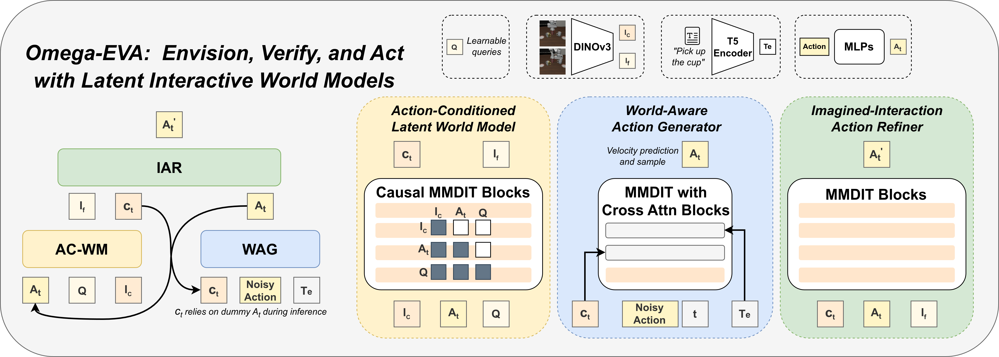
Interactive Consequence Reasoning
The same scene is shown for the Stage 2 proposal and the Stage 3 refined action. The imagined futures visualize latent predictions through a diagnostic decoder.
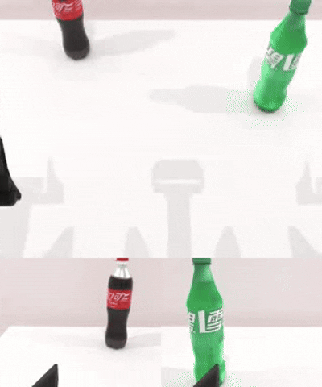
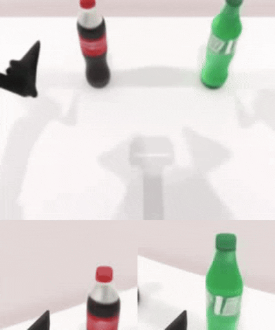
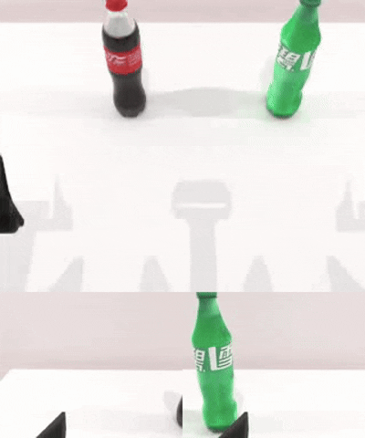
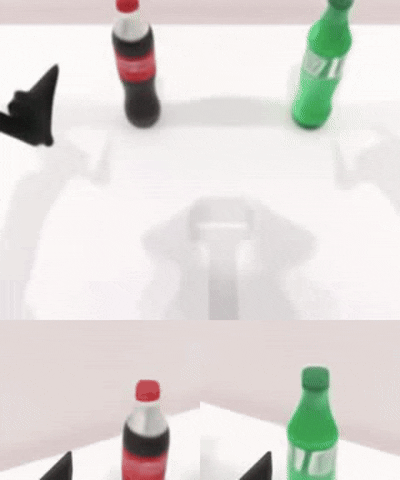
Diagnostic visualizations only. ω-EVA performs consequence reasoning in latent feature space and does not decode videos during policy inference.
Experimental Results
Evaluated across single-arm, bimanual, long-horizon, and perturbed simulation settings, with no additional robot-data pretraining.
LIBERO
98.6%LIBERO-PLUS
83.4%RoboTwin 2.0
90.3%Core model scale
≈1.2BTask success rate (%). Higher is better.
| Benchmark | Training setting | Stage 2 | Stage 3 | Gain |
|---|---|---|---|---|
| LIBERO | Benchmark data | 97.9 | 98.6 | +0.7 |
| LIBERO-PLUS | Zero-shot from LIBERO | 71.3 | 72.2 | +0.9 |
| LIBERO-PLUS | Benchmark data | 81.2 | 83.4 | +2.2 |
| RoboTwin 2.0 | Benchmark data | 88.9 | 90.3 | +1.4 |
Representation Diagnostics
Dynamics-aware features shift activation toward the end effector, manipulated object, and nearby regions whose relationships can change under action.
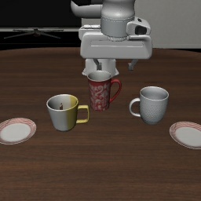
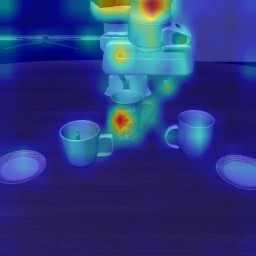
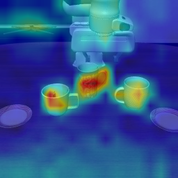
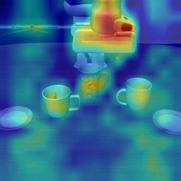
Latent Future Fidelity
A single diagnostic decoder makes predicted DINOv3 futures observable. It is used only for analysis, never for policy training or inference.
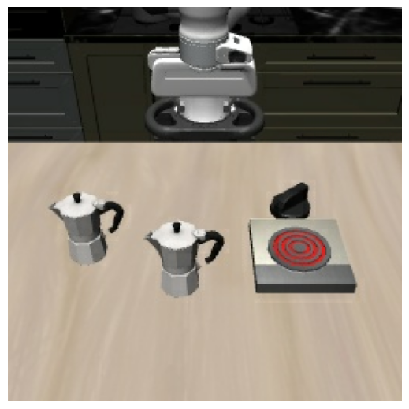
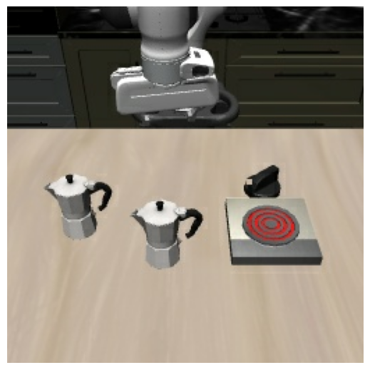
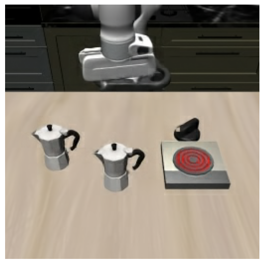

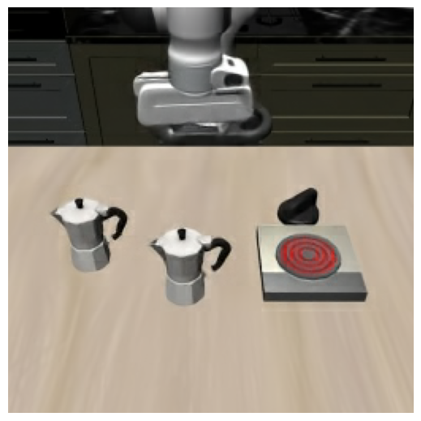
Paired structural fidelity
SSIM 0.9520 → 0.9562 Refined-action futures align more closely with the paired target.Set-level distribution
FID 7.41 → 7.40 Distributional fidelity is preserved with a slight improvement.Mechanism Ablation
The imagined consequence supplies feedback. The proposal identifies the action that must be corrected. Removing either branch falls below the complete Stage 3 model.
Citation
The code is now available on GitHub. Dataset releases are being prepared, and the paper is publicly available on arXiv.
Read the paper@article{sun2026omegaeva,
title = {$\omega$-EVA: Envision, Verify, and Act
with Latent Interactive World Models},
author = {Sun, Zhenguo and Sun, Yu and
Huang, Hande and Knoll, Alois},
journal = {arXiv preprint arXiv:2606.09457},
year = {2026}
}